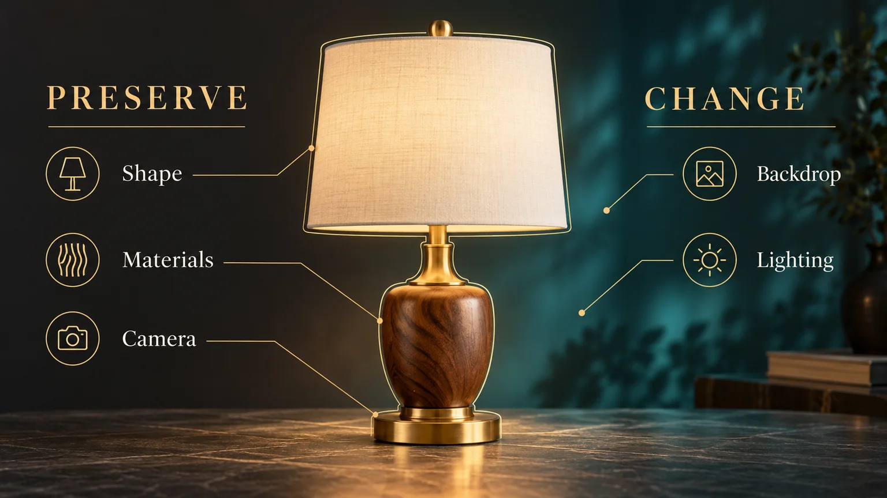

An image can be impressive and still miss the assignment. The room has the wrong camera angle. The product changes shape during an edit. The title looks convincing until you read it closely. For creative work, the useful question about ChatGPT Image 2 is how to turn an appealing result into an image that actually fits the job.
Image/2 and Midjourney are part of my image-making toolkit. Here, I want to focus on the decisions around the image: the brief, the references, the changes worth requesting, and the checks before a file becomes part of a project. This is a practical guide, rather than a new-release announcement or a controlled comparison between models.
What the Image 2 name means
OpenAI documents the explicit model as GPT Image 2, with the API name gpt-image-2. It supports image generation and editing from text and image inputs. ChatGPT is a product interface, so its name alone does not identify the exact image model used for every request.
The current image-generation documentation also describes newer Image 2.5 models. This article stays focused on Image 2 and useful creative practice. Check the current model and controls available in the tool you are using instead of assuming that every image interface behaves identically.
Write the assignment before the atmosphere
Start with what the image needs to do. A book cover, a product concept, a film reference and a website banner have different jobs. Describe the intended use, the important subject, the required composition and anything that cannot change. Then add the lighting and mood.
For example: an original glass greenhouse miniature on an artist's worktable, photographed as a wide editorial cover, with space around the subject and no lettering. That brief establishes a usable image before words such as cinematic or beautiful enter the conversation.
Give exact text when text matters, and specify the framing early. A good square composition may be a poor wide banner. Asking for the correct shape at the beginning helps you judge where the important details belong rather than relying on a difficult crop later.
Tell each reference image what job it has
A reference can establish identity, material, location, camera or style. Those are different instructions. If you provide several pictures without explaining their roles, you may get an attractive mixture that does not preserve the detail you cared about most.
Name the authoritative reference and the allowed changes. For a character, the face and age may be fixed while expression changes. For a product, the shape and hardware may be fixed while the environment changes. A mood reference should not quietly become permission to redesign the subject.
Keep source files separate from outputs. Use copies when you need to prepare working references, retain the approved originals, and name accepted variations clearly. The organization matters when you return to a sequence after a few days and need to know which image actually defines the design.
Ask for a specific edit, then inspect what stayed
OpenAI's prompting guide emphasizes explicit constraints and small revisions. A practical way to apply that idea is to write two lists: the change you want and the features you need preserved.
For a lamp image, an example instruction would be: replace the plain background with a restrained blue studio backdrop; retain the lamp's silhouette, walnut base, brass fittings, cream shade and camera position. That gives the revision a clear purpose and gives you a way to review it afterward.

The diagram illustrates that planning decision. It is not a before-and-after benchmark or a claim that a particular model will preserve every detail automatically.
Compare the entire result with the original. Check the parts that were meant to remain fixed, not just the new background. If several things changed, narrow the next request instead of piling another broad correction onto an already drifting image.
Treat lettering as something to proofread
If the image includes a title, label or sign, check every character at the intended display size. Look at spelling, punctuation, spacing, line breaks and the relationship between the words and the subject. A convincing texture can make a typographic mistake surprisingly easy to overlook.
For final artwork where the exact wording must remain editable, consider keeping the illustration and finished typography separate. You can still use an image concept to explore hierarchy and placement, then set the production lettering in the appropriate design tool.
The same review applies to a thumbnail. Shrink the image to the size people will actually see. If the subject disappears or the words become a dense block, a larger source file has not solved the composition problem.
Use AI images as reference with clear boundaries
An image can be useful for exploring materials, atmosphere and an overall direction without being reliable dimensional evidence. For 3D work, keep measured drawings and approved product information separate from visual inspiration. A plausible joint, opening or mechanism still needs to make sense when modeled.
That distinction is explored further in AI Concept Art Is Not a Blueprint. The useful handoff is a clear visual intention plus verified information, rather than asking a renderer to reproduce every invented detail as though it were a specification.
Finish with a usable file
Before placing an image into a website, edit or presentation, check its dimensions, aspect ratio, crop and format. Inspect the actual export, not just the generation preview. Make sure important details survive the final size and that the file is stored where the project expects it.
Give the image a descriptive filename and describe its visible content in alt text when it is used on a webpage. Keep promotional illustrations distinct from actual production stills or product photography. Those are ordinary finishing decisions, but they are what make the result useful beyond the generation session.
For a practical example, my Orb story world uses recurring character and environment references: the Traveler and his horse need to remain recognizable across scenes, not just look convincing in one image. You can also explore my AI imagery and films and 3D visualization work. A productive Image 2 workflow starts with a clear brief and ends with an image you have checked, chosen and deliberately put to use.